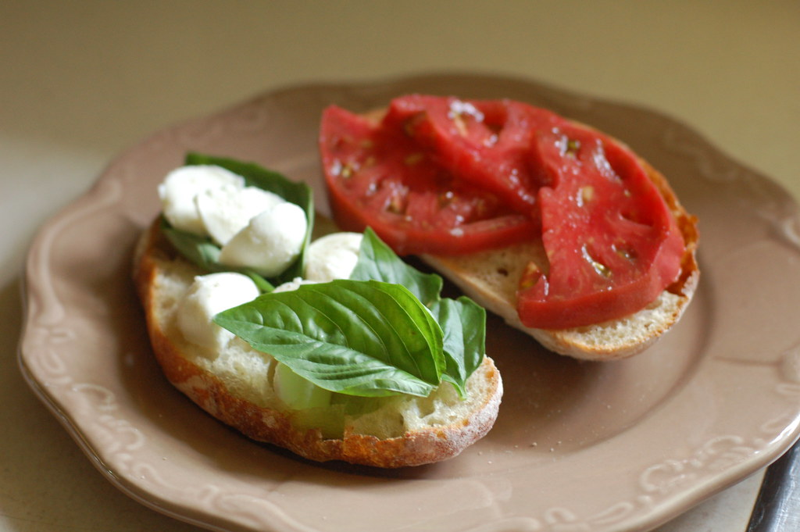

Caprese Panini

Ingredients
- 2 Slices of Sourdough bread
- ½ of a Tomato
- Pesto
- 3 slices of Mozzarella
- Mixed greens
- Balsamic glaze
- EVOO
Instructions
- Heat 1 tbs of EVOO in a skillet over medium high heat
- Spread pesto on both sides of the bread
- Place mixed greens on one side
- On top of that, put slices of tomato, then mozzarella, then drizzle with balsamic glaze
- Place the other piece of bread on top
- Place the sandwich into preheated skillet
- Use a spatula to press sandwich down
- Place a lid on top of the pan to help cheese melt
- After 3-5 minutes, check to see if sandwich is golden brown and that cheese is slightly melted
- If ready, flip sandwich until it is golden brown on the other side
- Once ready, cut in half and ENJOY!